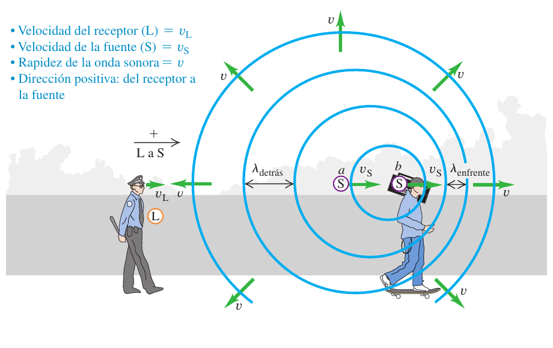
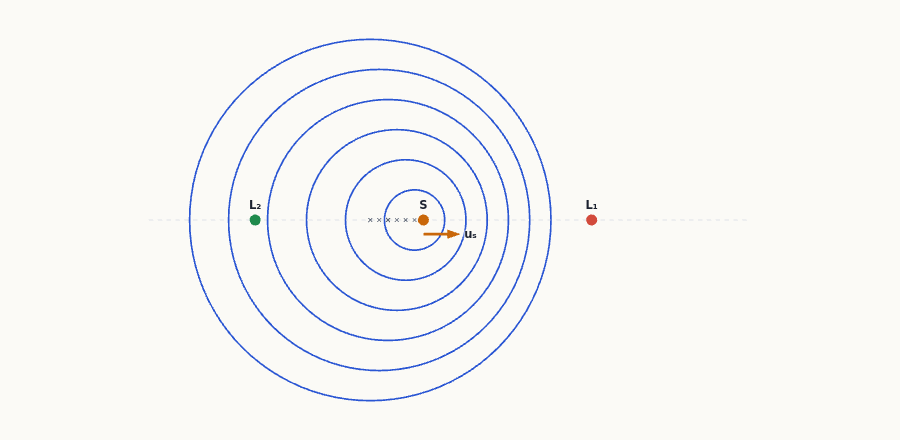
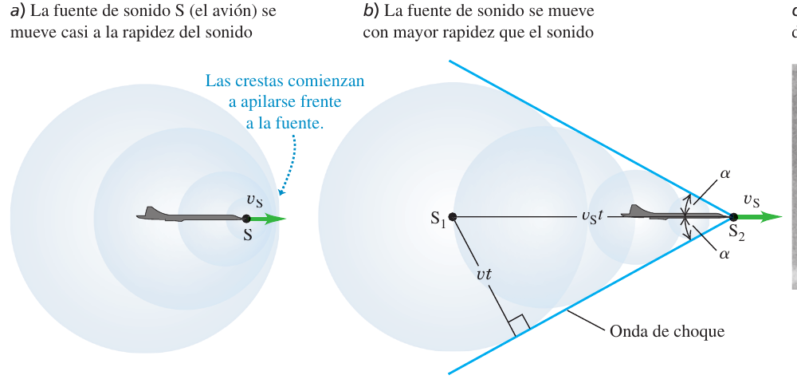

Sonido y oído
El sonido es una onda mecánica longitudinal que viaja por el aire (o el agua, o un sólido) y que tu oído detecta como cambios de presión. Este tema te enseña a describirla con la amplitud de desplazamiento y la de presión, a calcular su rapidez y su intensidad (y a medirla en decibelios), a entender por qué un tubo de órgano o una flauta solo suena con ciertas frecuencias (ondas estacionarias y resonancia), qué pasa cuando dos sonidos se suman (interferencia y pulsos) y por qué la sirena de una ambulancia cambia de tono al pasar (efecto Doppler), hasta llegar a las ondas de choque de un avión supersónico.
El tema en 5 minutos P
Una sola idea: el sonido es una onda mecánica longitudinal (tema 15) que viaja por un fluido o un sólido: las partículas oscilan a lo largo de la dirección de propagación y el medio se comprime y se expande. Se describe de dos formas equivalentes, por el desplazamiento de las partículas o por la variación de presión (lo que mide el oído). El medio fija la rapidez ($v=\sqrt{B/\rho}$; en un gas, $v\propto\sqrt T$); la fuente fija la frecuencia. Con eso se resuelve todo: cuánto «suena» (intensidad y decibelios), qué notas da un tubo (ondas estacionarias), qué pasa al sumar dos sonidos (interferencia y pulsos) y por qué cambia el tono si algo se mueve (efecto Doppler y ondas de choque).
Necesitas: del tema 15, $v=\lambda f$, $k=2\pi/\lambda$, $\omega=2\pi f$, $y=A\cos(kx-\omega t)$, la intensidad de una fuente puntual $I=P/4\pi r^2$ y los modos normales de una cuerda ($f_n=nf_1$); la resonancia (T14); el módulo volumétrico $B$ (T11); logaritmos decimales ($\log2\approx0{,}30$, $\log10=1$); la temperatura en kelvin.
El método en 4 pasos (úsalo siempre, en este orden)
Es el planteamiento de las dos estrategias para resolver problemas del capítulo 16 del libro (ondas sonoras y efecto Doppler: identificar, plantear, ejecutar, evaluar). U p.515, 530
Las 6 fórmulas que hay que saber
| Fórmula | Cuándo se usa |
|---|---|
| $p_\text{máx}=BkA$, $\ k=\dfrac{2\pi f}{v}$ | «amplitud de presión», «desplazamiento máximo de las moléculas», «umbral de dolor (30 Pa)». |
| $v=\sqrt{\dfrac B\rho}$, $\ v=\sqrt{\dfrac Y\rho}$, $\ v=\sqrt{\dfrac{\gamma RT}{M}}$ | «rapidez del sonido en el agua, en una barra, en helio a 27 °C», «¿a qué temperatura…?», «módulo volumétrico a partir de $\lambda$». |
| $I=\dfrac{p_\text{máx}^2}{2\rho v}$, $\ I=\dfrac{P}{4\pi r^2}$; $\ \beta=(10\ \text{dB})\log\dfrac I{I_0}$ | «intensidad», «potencia del altavoz», «nivel en decibelios», «¿a qué distancia oirás 60 dB?», «varias fuentes a la vez». |
| Abierto: $f_n=\dfrac{nv}{2L}$ ($n=1,2,3\dots$); cerrado: $f_n=\dfrac{nv}{4L}$ ($n=1,3,5\dots$) | «tubo de órgano», «flauta», «tubo de ensayo», «dos armónicos sucesivos», «¿abierto o cerrado?», «resonancia». |
| Constructiva $\Delta=n\lambda$, destructiva $\Delta=(n+\tfrac12)\lambda$; $\ f_\text{pulso}=f_a-f_b$ | «dos altavoces en fase», «frecuencia más baja con interferencia destructiva», «pulsos por segundo», «afinar». |
| $f_L=\dfrac{v+v_L}{v+v_S}\,f_S$ («+» de $L$ a $S$); $\ \sin\alpha=\dfrac v{v_S}$ | «sirena que se acerca», «tren», «eco en un objeto que se mueve», «radar», «Mach», «¿cuándo se oye el estruendo?». |
Qué cae en examen
Seamos claros: en las convocatorias disponibles (2018-2025) no ha caído nada de este tema, ni problema ni pregunta de teoría (el índice de exámenes lo marca como «ningún ejercicio de examen encontrado»). P Eso no significa que no pueda caer: la pregunta de teoría de 4 puntos (con dos cuestiones cortas) puede ser de cualquier tema, y aquí hay dos candidatos naturales: efecto Doppler y ondas sonoras estacionarias en tubos. Por eso te dejamos una pregunta de teoría propia (T1, Doppler) y dos cuestiones cortas propias (C1, C2), claramente marcadas como no de examen. Los problemas son los del solucionario y el problema práctico de U: sirven para entender las fórmulas y para las PEC.
Elige tu ruta
Esta página + lo marcado 🔴 imprescindible (secciones 1-4 y 8) + T1, C1 y C2 + del Núcleo 16.15, 16.26, 16.63, 16.50 y 16.55.
Todo lo anterior + 🟡 resonancia, interferencia, pulsos y ondas de choque + el resto del «Núcleo» + bloque «Práctica».
Chuleta, errores frecuentes, lista de comprobación; escribe «Efecto Doppler para el sonido» en una cara en 25 minutos y compáralo con T1.
¿?¿Qué tipo de problema es? 🔴 P
Lee el enunciado, busca la pista en la primera columna y ve directo al método y al ejercicio modelo.
| Si el enunciado dice… | Haz esto | Ejercicio modelo |
|---|---|---|
| «amplitud de desplazamiento … ¿amplitud de presión?», «umbral de dolor», «¿qué frecuencia para que…?» | $p_\text{máx}=BkA$ con $k=2\pi f/v$; razona con lo que se mantiene fijo ($A$ fija ⇒ $p_\text{máx}\propto f$). | 16.1, 16.3 |
| «rapidez del sonido en H₂, He…», «a 27 °C», «módulo volumétrico / de Young a partir de $v$» | $v=\sqrt{\gamma RT/M}$ ($T$ en K, $M$ en kg/mol); módulo $=\rho v^2$ ($B$ en fluido, $Y$ en varilla). | 16.8, 16.6 |
| «lo oyen a la vez», «uno bajo el agua y otro en tierra» | Iguala los tiempos: $\sum d_i/v_i$ de cada camino. | 16.7 |
| «¿en qué factor aumenta la intensidad para +13 dB?», «¿a qué distancia oirás 60 dB?» | $\Delta\beta=10\log(I_2/I_1)$; fuente puntual $I_2/I_1=(r_1/r_2)^2$ (cada ×10 en $r$ son −20 dB). | 16.15, 16.14 |
| «varias fuentes independientes», «cuatrillizos», «dos máquinas de 60 dB» | Suma intensidades: $N$ fuentes iguales ⇒ $+10\log N$ dB. | 16.20, C2 |
| «tubo abierto en ambos extremos», «se tapa un extremo», «tubo de ensayo», «el tubo más grande del órgano» | Dibuja A en los abiertos y N en los cerrados; abierto $L=n\lambda/2$, cerrado $L=n\lambda/4$ ($n$ impar); $f=v/\lambda$. | 16.26, 16.29, 16.31, C1 |
| «dos armónicos sucesivos de … y … Hz: ¿abierto o cerrado?» | Diferencia $=f_1$ (abierto) o $2f_1$ (cerrado); vale la hipótesis que da $n$ entero (impar si cerrado). | 16.63 |
| «alambre que vibra: ¿frecuencia y $\lambda$ del sonido que emite?», «resonancia con una cuerda» | Se conserva $f$; $\lambda_\text{aire}=v_\text{aire}/f$. Resonancia ⇒ igualar frecuencias. | 16.33 |
| «¿a qué temperatura sonará a … Hz?», «el órgano se desafina con el calor» | $L$ fija ⇒ $f\propto v\propto\sqrt T$ (en kelvin). | 16.64 |
| «dos altavoces en fase», «frecuencia más baja con interferencia constructiva / destructiva» | $\Delta=|r_A-r_B|$; constructiva $\Delta=n\lambda$, destructiva $\Delta=(n+\tfrac12)\lambda$; $f=v/\lambda$. | 16.35 |
| «altavoces de distinta potencia en fase: intensidad y nivel en C» | Fuentes coherentes: suma amplitudes de presión con su desfase $2\pi\Delta/\lambda$; luego a $I$ y a dB. | problema práctico |
| «pulsos entre dos guitarras», «claxon y pulsos de 6 Hz» | $f_\text{pulso}=|f_a-f_b|$; con Doppler, el signo lo decide si se acerca o se aleja. | 16.40, 16.52 |
| «tren que se acerca / se aleja», «fuente móvil frente a receptor móvil», «longitud de onda delante y detrás» | Flecha «+» de $L$ a $S$, signo a cada velocidad, $f_L=\frac{v+v_L}{v+v_S}f_S$; $\lambda$ delante/detrás $=(v\mp v_S)/f_S$. | 16.50, 16.46, 16.48 |
| «reflejada en un camión / en un auto», «el sonido rebota y vuelve con … Hz» | Eco en dos pasos: el objeto recibe $f'$ (receptor) y la reemite (fuente); cambia el «+» en cada paso. | 16.55, 16.54 |
| «Mach 1,70», «¿cuánto después de pasar oímos el estruendo?» | $\sin\alpha=1/\text{Mach}$; $\tan\alpha=h/(v_St)$. | 16.57 |
| «Desarrolle el tema: efecto Doppler», «¿qué pasa si…?» | Guion: convenio → receptor móvil ($\lambda$ igual) → fuente móvil ($\lambda$ cambia) → (16.29) → asimetría, eco, luz, Mach. | Teoría, T1 |
1Ondas sonoras: desplazamiento y presión 🔴 U p.506-510
Cuando hablas, empujas el aire: lo comprimes un instante y lo dejas expandirse al siguiente. Esas zonas apretadas (compresiones) y sueltas (rarefacciones) se alejan de ti, pero el aire no viaja: cada capa solo oscila un poco hacia delante y hacia atrás, en la misma dirección en que avanza la onda (onda longitudinal). Se describe de dos maneras equivalentes:
- Desplazamiento de las partículas a lo largo de $x$: $y(x,t)=A\cos(kx-\omega t)$ (16.1), con $k=2\pi/\lambda$, $\omega=2\pi f$.
- Variación de presión respecto a la atmosférica (como una presión manométrica, puede ser negativa): $p=-B\,\partial y/\partial x=BkA\sin(kx-\omega t)$ (16.3-16.4), con $B$ el módulo volumétrico. Su amplitud es
La presión cambia donde el fluido se comprime o se estira, es decir, donde el desplazamiento cambia de un punto al siguiente: por eso $p$ y $y$ están desfasadas $90^\circ$ (la presión es máxima donde el desplazamiento es cero). A igual $A$, los sonidos agudos ($k$ grande) dan más presión; a igual $p_\text{máx}$, $A\propto1/f$.
Ejemplo mínimo (ejemplo 16.1 de U): un sonido de 1000 Hz con $p_\text{máx}=3{,}0\times10^{-2}$ Pa en el aire ($B=1{,}42\times10^5$ Pa, $v=344$ m/s): $k=2\pi(1000)/344=18{,}3$ rad/m y $A=p_\text{máx}/Bk=1{,}2\times10^{-8}$ m. ¡Una centésima de una célula! El oído detecta presiones, no estos desplazamientos.
Error típico: creer que el máximo de presión coincide con el máximo de desplazamiento, o usar $k=f/v$ (falta el $2\pi$).
U p.506-508
El tono (agudo o grave) lo fija sobre todo la frecuencia; el volumen, sobre todo la amplitud de presión (a 1000 Hz el mínimo audible es $p_\text{máx}\approx3\times10^{-5}$ Pa y el umbral de dolor, unos 30 Pa); el timbre (lo que distingue un clarinete de una flauta en la misma nota), el conjunto de armónicos que acompañan a la fundamental. El ruido mezcla todas las frecuencias. El oído medio ayuda: la fuerza del tímpano (43 mm²) se transmite al estribo (3,2 mm²), así que la presión en el oído interno se multiplica por $43/3{,}2\approx13$ (ejemplo 16.2).
Error típico: confundir tono (frecuencia) con volumen (amplitud).
U p.508-510✍️ Comprueba que lo has entendido (2 min)
- Con la amplitud de presión fija, la frecuencia sube de 100 a 400 Hz. ¿Qué pasa con la amplitud de desplazamiento?
Ver respuesta
Se reduce a la cuarta parte: $A=p_\text{máx}/(Bk)$ y $k=2\pi f/v$ se multiplica por 4. - Una onda de 500 Hz en el aire ($B=1{,}42\times10^5$ Pa, $v=344$ m/s) tiene $A=1{,}0\times10^{-8}$ m. ¿$p_\text{máx}$?
Ver respuesta
$k=2\pi(500)/344=9{,}13$ rad/m ⇒ $p_\text{máx}=BkA=(1{,}42\times10^5)(9{,}13)(1{,}0\times10^{-8})=0{,}013$ Pa. - ¿Dónde está la compresión (presión máxima) respecto al desplazamiento?
Ver respuesta
Donde el desplazamiento es cero: allí las capas vecinas se acercan desde los dos lados. Presión y desplazamiento van desfasados un cuarto de ciclo.
2Rapidez de las ondas sonoras 🔴 U p.510-513
Como en una cuerda ($v=\sqrt{F/\mu}$), la rapidez es la raíz de «lo que devuelve al equilibrio» entre «la inercia». En el sonido lo primero es la resistencia a comprimirse:
$$v=\sqrt{\frac B\rho}\ \ (16.7,\ \text{fluido})\qquad v=\sqrt{\frac Y\rho}\ \ (16.8,\ \text{varilla delgada})\qquad \boxed{v=\sqrt{\frac{\gamma RT}M}}\ \ (16.10,\ \text{gas ideal})$$En un gas $B=\gamma p_0$ (16.9) y $B/\rho$ solo depende de la temperatura: $v\propto\sqrt T$; a igual $T$, $v\propto\sqrt{\gamma/M}$ (gas más ligero ⇒ más rápido). $\gamma$ es el cociente de capacidades caloríficas (1,40 en el aire; se ve en el tema 19). $T$ en kelvin, $R=8{,}314$ J/(mol·K), $M$ en kg/mol.
Ejemplo mínimo (ejemplos 16.3 y 16.4 de U): aire a 20 °C, $v=\sqrt{(1{,}40)(8{,}314)(293)/(28{,}8\times10^{-3})}=344$ m/s, y el oído (20 Hz a 20 000 Hz) abarca $\lambda$ de 17 m a 1,7 cm. Agua: $v=\sqrt{2{,}18\times10^9/1{,}00\times10^3}=1480$ m/s; un sonar de 262 Hz tiene $\lambda=5{,}65$ m. El agua es más densa, pero muchísimo más rígida.
Error típico: poner $T$ en °C o $M$ en g/mol (error de un factor $\sqrt{1000}\approx32$), o usar $B$ en una varilla (manda $Y$).
U p.511-513Un pistón empuja con rapidez $v_y$ un fluido en reposo dentro de un tubo de sección $A$; la perturbación avanza a $v$. En un tiempo $t$ se mueve la masa $\rho vtA$, con cantidad de movimiento $\rho vtA\,v_y$. Ese volumen $vtA$ se ha reducido en $Av_yt$, así que la sobrepresión es $\Delta p=B\,v_y/v$ y el impulso neto, $\Delta p\,At$. Igualando impulso y cantidad de movimiento (16.6): $B\dfrac{v_y}{v}At=\rho vtA\,v_y\ \Rightarrow\ v=\sqrt{B/\rho}$ (16.7). Útil si en teoría te piden «deducir la rapidez del sonido».
U p.510-511✍️ Comprueba que lo has entendido (2 min)
- ¿Por qué el sonido de un cuerno viaja más despacio en un frío día de invierno en la montaña que en un día de verano a nivel del mar?
Ver respuesta
Por la temperatura: $v=\sqrt{\gamma RT/M}\propto\sqrt T$. La presión no influye (se cancela en $B/\rho$) y la composición del aire es la misma. (Pregunta de inicio del capítulo.) - ¿Rapidez del sonido en el aire a 0 °C ($\gamma=1{,}40$, $M=28{,}8\times10^{-3}$ kg/mol)?
Ver respuesta
$T=273{,}15$ K ⇒ $v=\sqrt{(1{,}40)(8{,}314)(273{,}15)/(28{,}8\times10^{-3})}=332$ m/s. - El mercurio es 13,6 veces más denso que el agua y el sonido va casi igual de rápido en ambos (1451 y 1482 m/s). ¿Cuál tiene mayor módulo volumétrico?
Ver respuesta
El mercurio: $B=\rho v^2$ ⇒ $B_\text{Hg}/B_\text{agua}=13{,}6\,(1451/1482)^2=13{,}0$.
3Intensidad del sonido y decibelios 🔴 U p.514-518
La intensidad es la potencia media que atraviesa cada m² perpendicular a la propagación (W/m²). Promediando $p\,v_y$ en un ciclo:
$$I=\tfrac12\sqrt{\rho B}\,\omega^2A^2\quad(16.12)\qquad\boxed{I=\frac{p_\text{máx}^2}{2\rho v}}\quad(16.14)$$La segunda es la cómoda: a igual intensidad, sonidos de distinta frecuencia tienen la misma $p_\text{máx}$ (pero distinto $A$; $fA$ constante, ejemplo 16.6). Si la fuente emite igual en todas direcciones, la potencia se reparte en una esfera: $I=P/4\pi r^2$ (15.26); sobre el suelo, en una semiesfera ($2\pi r^2$, ejemplo 16.7).
Ejemplo mínimo (ejemplo 16.5 de U): con $p_\text{máx}=3{,}0\times10^{-2}$ Pa, $\rho=1{,}20$ kg/m³ y $v=344$ m/s, $I=(3{,}0\times10^{-2})^2/[2(1{,}20)(344)]=1{,}1\times10^{-6}$ W/m². El oído va de $10^{-12}$ W/m² (umbral) a unos 1 W/m² (dolor).
Error típico: aplicar el inverso del cuadrado en interiores (las reflexiones lo estropean) u olvidar el 2 del denominador.
U p.514-516Como el oído abarca un factor $10^{12}$ en intensidad, se usa una escala logarítmica (como la escala Richter): cada ×10 en $I$ suma 10 dB.
$$\boxed{\beta=(10\ \text{dB})\log\frac I{I_0}},\quad I_0=10^{-12}\ \text{W/m}^2\quad(16.15)\qquad\beta_2-\beta_1=(10\ \text{dB})\log\frac{I_2}{I_1}$$Despejando: $I=I_0\,10^{\beta/(10\ \text{dB})}$. Tres saltos que conviene saber: ×2 ⇔ +3 dB; ×10 ⇔ +10 dB; distancia ×2 a una fuente puntual ⇔ −6 dB (ejemplo 16.9: $10\log\tfrac14=-6{,}0$ dB, sea cual sea el nivel inicial). $N$ fuentes iguales e independientes: $+10\log N$ dB. Un aumento de unos 8-10 dB se percibe como el doble de volumen.
Ejemplo mínimo (ejemplo 16.8 de U): 92 dB son $I=10^{-12}\cdot10^{9{,}2}=1{,}6\times10^{-3}$ W/m², intensidad que durante años daña el oído de forma permanente.
Error típico: sumar decibelios. Dos máquinas de 60 dB dan 63 dB, no 120 dB: se suman las intensidades y luego se vuelve a dB. Y el nivel en dB no cumple el inverso del cuadrado: lo cumple $I$.
U p.515-518✍️ Comprueba que lo has entendido (2 min)
- Se duplica la intensidad de un sonido sin cambiar su frecuencia. ¿Qué pasa con $\beta$, con $p_\text{máx}$ y con $v$?
Ver respuesta
$\beta$ sube $(10\ \text{dB})\log2=3{,}0$ dB; $p_\text{máx}$ (y $A$) se multiplican por $\sqrt2$; $v$ no cambia (es del medio). - ¿Qué intensidad corresponde a 80 dB?
Ver respuesta
$I=10^{-12}\cdot10^{8}=1{,}0\times10^{-4}$ W/m². - Estás a 10 m de una fuente puntual y te alejas hasta 100 m. ¿Cuántos dB baja el nivel?
Ver respuesta
$I$ se divide por $10^2$ ⇒ $\Delta\beta=10\log10^{-2}=-20$ dB.
4Ondas sonoras estacionarias: tubos abiertos y cerrados 🔴 U p.518-522
Una onda sonora que va y vuelve por un tubo forma una onda estacionaria, como una cuerda (tema 15). Lo nuevo: hay dos formas de mirarla y sus nodos están intercambiados. Donde el gas no se mueve (nodo de desplazamiento, N) se comprime y expande al máximo: es un antinodo de presión; y donde más se mueve (antinodo de desplazamiento, A), la presión no varía: nodo de presión.
- Extremo cerrado (tapón): el gas no puede moverse ⇒ N de desplazamiento (como el extremo fijo de una cuerda).
- Extremo abierto: está a presión atmosférica ⇒ nodo de presión ⇒ A de desplazamiento.
- N–A contiguos: $\lambda/4$; N–N o A–A: $\lambda/2$.
Ejemplo mínimo (tubo de Kundt): el polvo del fondo de un tubo se amontona en los nodos de desplazamiento; si los montones distan $d$, $\lambda=2d$ y $v=2df$. Con 1000 Hz y $d=17{,}2$ cm, $v=344$ m/s. Y frente a una pared que refleja un sonido no oyes nada a $\lambda/4$, $3\lambda/4$… de ella: son nodos de presión (ejemplo 16.10).
Error típico: poner un nodo de desplazamiento en el extremo abierto: allí hay nodo de presión.
U p.518-519Abierto (A en los dos extremos): $L$ es un número entero de medias longitudes de onda.
$$\boxed{\lambda_n=\frac{2L}n,\quad f_n=\frac{nv}{2L}=nf_1\quad(n=1,2,3,\dots)}\qquad(16.16\text{-}16.19)$$Cerrado (A en la boca, N en el fondo): $L$ es un número impar de cuartos de onda.
$$\boxed{\lambda_n=\frac{4L}n,\quad f_n=\frac{nv}{4L}=nf_1\quad(n=1,3,5,\dots)}\qquad(16.20\text{-}16.23)$$El cerrado no tiene armónicos pares y, a igual $L$, su fundamental es la mitad (una octava más grave). $\lambda_n$ solo depende de la geometría; el gas y la temperatura fijan $v$ y, con ella, $f=v/\lambda$: los instrumentos de viento suben de tono al calentarse. Una flauta se comporta como un tubo abierto; un clarinete, como uno cerrado.
Ejemplo mínimo (ejemplo 16.11 de U, $v=345$ m/s): un tubo cerrado de fundamental 220 Hz mide $L=345/(4\cdot220)=0{,}392$ m. Su segundo sobretono es el quinto armónico (1100 Hz); un tubo abierto cuyo tercer armónico sea 1100 Hz mide $L=3(345)/(2\cdot1100)=0{,}470$ m.
Error típico: intercambiar $2L$ y $4L$, o llamar «segundo sobretono» al $n=2$ (es $n=3$ en un abierto y $n=5$ en un cerrado).
U p.520-522


✍️ Comprueba que lo has entendido (2 min)
- Un tubo cerrado de 0,25 m con aire ($v=344$ m/s). ¿Sus tres primeras frecuencias?
Ver respuesta
$f_1=344/(4\cdot0{,}25)=344$ Hz; después solo impares: $3f_1=1032$ Hz y $5f_1=1720$ Hz. - Se llena de helio, a la misma presión y temperatura, un tubo de órgano. ¿Cambia $\lambda_1$? ¿Y el tono?
Ver respuesta
$\lambda_1$ no (solo depende de $L$ y del tipo de tubo); $v$ es mayor en el helio, así que $f=v/\lambda$ sube: tono más alto. - En un tubo de Kundt a 3440 Hz los montones de polvo están separados 5,0 cm. ¿Rapidez del sonido en el gas?
Ver respuesta
$\lambda=2d=0{,}10$ m ⇒ $v=\lambda f=(0{,}10)(3440)=344$ m/s.
5Resonancia y sonido 🟡 U p.522-524
Empujar un columpio a su ritmo lo hace subir cada vez más (tema 14). Un tubo o una cuerda tienen muchos ritmos propios (sus modos normales): si una fuerza periódica (un altavoz, un soplo, otra cuerda) tiene una frecuencia igual a uno de ellos, el sistema responde con amplitud máxima, está en resonancia. La curva de resonancia (amplitud frente a frecuencia) tiene picos en $f_1,2f_1,3f_1\dots$ de un tubo abierto; el amortiguamiento los hace finitos. Por eso suena una botella al soplar, y el canal auditivo (tubo cerrado de unos 2,5 cm) hace al oído más sensible cerca de $f_1=344/(4\cdot0{,}025)=3440$ Hz.
Ejemplo mínimo (ejemplo 16.12 de U): un tubo cerrado hace vibrar en su fundamental una cuerda que mide el 80 % del tubo. Igualando frecuencias, $\dfrac{v_a}{4L_a}=\dfrac{v_s}{2L_s}$ ⇒ $\dfrac{v_s}{v_a}=\dfrac{2(0{,}80)}{4}=0{,}40$.
Error típico: decir que en resonancia coinciden las longitudes de onda: coinciden las frecuencias; al pasar de la cuerda al aire cambia $v$ y con ella $\lambda=v/f$.
U p.522-524
✍️ Comprueba que lo has entendido (2 min)
- Un tubo cerrado de longitud $L$ tiene $f_1=220$ Hz. ¿Resuena con un diapasón de 660 Hz? ¿Y un tubo abierto de la misma $L$?
Ver respuesta
El cerrado sí: $660=3f_1$, armónico impar. El abierto tiene $f_1=440$ Hz y armónicos 440, 880…: 660 no está, no resuena. - ¿Por qué el oído es especialmente sensible hacia los 3400 Hz?
Ver respuesta
El canal auditivo es un tubo cerrado (por el tímpano) de unos 2,5 cm: $f_1=v/4L=3440$ Hz y el aire del canal resuena ahí. - Un alambre vibra a 137 Hz y su onda en el alambre tiene $\lambda=0{,}500$ m. ¿El sonido que emite tiene esa misma $\lambda$?
Ver respuesta
No: tiene la misma frecuencia, 137 Hz, pero en el aire $\lambda=344/137=2{,}5$ m (problema 16.33).
6Interferencia de ondas 🟡 U p.524-526
Dos altavoces con el mismo amplificador emiten la misma onda a la vez. En un punto, si las crestas llegan juntas se refuerzan; si cresta con valle, se cancelan. Lo decide la diferencia de trayectorias $\Delta=|r_A-r_B|$:
$$\Delta=0,\lambda,2\lambda,\dots\Rightarrow\textbf{constructiva}\qquad\Delta=\tfrac\lambda2,\tfrac{3\lambda}2,\dots\Rightarrow\textbf{destructiva}\qquad\Delta\phi=\frac{2\pi\Delta}{\lambda}$$Con fuentes coherentes (misma $f$ y fase fija) se suman amplitudes de presión; con fuentes independientes, intensidades. Con frecuencias distintas no hay puntos de interferencia estables. La onda total sigue siendo viajera: la interferencia solo reparte la energía en unas direcciones y la quita de otras (no es una onda estacionaria). Así funcionan los auriculares con cancelación de ruido.
Ejemplo mínimo (ejemplo 16.13 de U, $v=350$ m/s): en P, $d_A=\sqrt{2^2+4^2}=4{,}47$ m y $d_B=\sqrt{1^2+4^2}=4{,}12$ m ⇒ $\Delta=0{,}35$ m. Constructiva si $f=nv/\Delta=1000,2000,\dots$ Hz; destructiva si $f=500,1500,2500,\dots$ Hz.
Error típico: usar la distancia a un solo altavoz, o la separación entre ellos, en lugar de la diferencia de caminos; y sumar intensidades de fuentes coherentes.
U p.524-526✍️ Comprueba que lo has entendido (2 min)
- Dos altavoces en fase; en P la diferencia de caminos es 0,50 m ($v=344$ m/s). ¿Frecuencia más baja con interferencia destructiva? ¿Y constructiva?
Ver respuesta
Destructiva: $\Delta=\lambda/2$ ⇒ $\lambda=1{,}0$ m ⇒ $f=344$ Hz. Constructiva: $\Delta=\lambda$ ⇒ $\lambda=0{,}50$ m ⇒ $f=688$ Hz. - El altavoz A emite 500 Hz y el B, 1000 Hz. ¿Dónde hay interferencia constructiva?
Ver respuesta
En ningún sitio de forma estable: con frecuencias distintas la diferencia de fase cambia continuamente con el tiempo. - Dos altavoces coherentes iguales dan cada uno 60 dB en un punto donde la interferencia es constructiva. ¿Nivel total?
Ver respuesta
Se suman amplitudes: $p_\text{máx}$ doble ⇒ $I$ cuádruple ⇒ $60+10\log4=66{,}0$ dB (si fueran independientes, 63 dB).
7Pulsos 🟡 U p.526-528
Dos sonidos de frecuencias muy próximas entran y salen de fase: oyes un tono que sube y baja de volumen («wow-wow-wow»). En un punto, $y_a+y_b=\big[2A\sin\tfrac12(2\pi)(f_a-f_b)t\big]\cos\tfrac12(2\pi)(f_a+f_b)t$: un tono de frecuencia media $\tfrac12(f_a+f_b)$ con una amplitud que varía despacio. La sonoridad tiene dos máximos por ciclo de esa amplitud, así que
$$\boxed{f_\text{pulso}=f_a-f_b}\qquad(16.24)$$Se oyen pulsos hasta unos 6-7 Hz; más allá se percibe disonancia. Quien afina un instrumento ajusta hasta que los pulsos desaparecen.
Ejemplo mínimo: un diapasón de 440 Hz y otro dan 3 pulsos/s ⇒ el segundo vibra a 437 o a 443 Hz.
Error típico: creer que los pulsos dicen cuál de las dos frecuencias es mayor: solo dan la diferencia.
U p.526-528
✍️ Comprueba que lo has entendido (2 min)
- Suenan a la vez 256 Hz y 260 Hz. ¿Cuántos pulsos por segundo? ¿Qué tono se oye?
Ver respuesta
$f_\text{pulso}=4$ Hz; se oye un tono de frecuencia media, 258 Hz, que sube y baja de volumen 4 veces por segundo. - Afinas una cuerda contra un diapasón: oyes 2 pulsos/s; tensas un poco la cuerda y pasan a 3 pulsos/s. ¿Qué debes hacer?
Ver respuesta
Al tensar sube $f$ y la diferencia ha crecido: la cuerda ya estaba por encima. Hay que aflojarla hasta que no haya pulsos. - ¿Por qué con 440 Hz y 3 pulsos/s no se puede saber la otra frecuencia sin más datos?
Ver respuesta
Porque $|f-440|=3$ tiene dos soluciones, 437 y 443 Hz: el pulso solo da el valor absoluto de la diferencia.
8Efecto Doppler 🔴 U p.528-533
Una ambulancia suena aguda al acercarse y grave al alejarse: si la fuente $S$ o el receptor $L$ (listener) se mueven respecto al aire, la frecuencia que se oye, $f_L$, no es la emitida, $f_S$. Se trabaja sobre la recta que une $S$ y $L$, con $v_S$ y $v_L$ medidas respecto al medio, y con este convenio: el sentido positivo, para las dos, es el que va de $L$ hacia $S$. La rapidez del sonido $v$ siempre es positiva.
Error típico: usar el signo «natural» (acercarse = +): invierte el resultado para la fuente.
U p.528La fuente quieta crea crestas separadas $\lambda=v/f_S$. Si vas hacia ella con $v_L$, las crestas te llegan con rapidez relativa $v+v_L$ y las cuentas más a menudo:
$$f_L=\frac{v+v_L}{\lambda}=\Big(1+\frac{v_L}{v}\Big)f_S\qquad(16.25),(16.26)$$Acercarse ($v_L>0$) ⇒ más agudo; alejarse ($v_L\lt0$) ⇒ más grave.
Ejemplo mínimo (ejemplo 16.16 de U): sirena quieta de 300 Hz, receptor que se aleja a 30 m/s ($v=340$ m/s): $v_L=-30$ ⇒ $f_L=(310/340)(300)=274$ Hz.
U p.528-531
La onda sigue viajando a $v$ (la fija el aire), pero la fuente persigue a las crestas que emite por delante y huye de las de detrás. En un periodo la cresta avanza $v/f_S$ y la fuente $v_S/f_S$:
$$\lambda_\text{enfrente}=\frac{v-v_S}{f_S}\ \ (16.27)\qquad\lambda_\text{atrás}=\frac{v+v_S}{f_S}\ \ (16.28)$$(aquí $v_S$ es la rapidez). Llevando $\lambda$ a $f_L=(v+v_L)/\lambda$ sale la expresión que vale para todas las combinaciones, con los signos del convenio:
$$\boxed{f_L=\frac{v+v_L}{v+v_S}\,f_S}\qquad(16.29)$$Comprobaciones: $v_L=v_S$ (p. ej. viento que arrastra igual a fuente y receptor) ⇒ $f_L=f_S$; fuente que se acerca ($v_S\lt0$) ⇒ $f_L>f_S$.
Ejemplo mínimo (ejemplo 16.14 de U): sirena de 300 Hz a 30 m/s, $v=340$ m/s: $\lambda_\text{enfrente}=310/300=1{,}03$ m y $\lambda_\text{atrás}=370/300=1{,}23$ m (en reposo, 1,13 m).
Error típico: pensar que la fuente móvil cambia la rapidez del sonido: cambia $\lambda$.
U p.529-530

Sirena de 300 Hz, $v=340$ m/s, y siempre «se alejan a 30 m/s» relativos (ejemplos 16.15-16.17 de U). Con el «+» de $L$ a $S$:
| Caso | $v_L$ | $v_S$ | $f_L$ |
|---|---|---|---|
| Fuente se aleja a 30 m/s, receptor quieto | 0 | +30 | $\frac{340}{370}(300)=276$ Hz |
| Receptor se aleja a 30 m/s, fuente quieta | −30 | 0 | $\frac{310}{340}(300)=274$ Hz |
| Fuente a 45 m/s alejándose, receptor a 15 m/s hacia ella | +15 | +45 | $\frac{355}{385}(300)=277$ Hz |
Tres resultados distintos: para el sonido no basta la velocidad relativa, porque el aire es una referencia física. Solo para la luz (sin medio) cuenta únicamente la velocidad relativa: $f_R=\sqrt{\tfrac{c-v}{c+v}}\,f_S$ (16.30), con $v>0$ si se alejan (corrimiento al rojo; radar de la policía).
U p.531-533Si el sonido se refleja en un objeto (quieto o móvil), aplica (16.29) dos veces: (1) el objeto es el receptor y recibe $f'$; (2) el objeto es una fuente que emite $f'$ hacia el receptor final. El sentido «+» cambia de un paso a otro. Así funcionan el radar, el sonar y la ecografía Doppler.
Ejemplo mínimo (ejemplo 16.18 de U): patrulla con sirena de 300 Hz hacia una bodega a 30 m/s ($v=340$ m/s). Paso 1, bodega receptora quieta, $v_S=-30$: $f'=\frac{340}{310}(300)=329$ Hz. Paso 2, bodega fuente quieta y conductor que va hacia ella, $v_L=+30$: $f_L=\frac{370}{340}(329)=358$ Hz.
Error típico: aplicar la fórmula una sola vez, o mantener el mismo «+» en los dos pasos.
U p.530, 532✍️ Comprueba que lo has entendido (2 min)
- En un concierto al aire libre sopla un viento de 10 m/s de los músicos hacia ti. ¿Oyes las notas desplazadas?
Ver respuesta
No: respecto al aire, fuente y receptor se mueven igual, $v_S=v_L=+10$ m/s, y en (16.29) numerador y denominador coinciden: $f_L=f_S$. - Una fuente quieta emite 500 Hz y tú vas hacia ella a 20 m/s ($v=340$ m/s). ¿Qué oyes?
Ver respuesta
$v_L=+20$ ⇒ $f_L=\frac{360}{340}(500)=529$ Hz. - Una ambulancia de 1000 Hz se aleja de ti a 30 m/s ($v=340$ m/s). ¿Qué oyes?
Ver respuesta
La fuente se mueve en el sentido de $L$ a $S$ (se aleja de ti) ⇒ $v_S=+30$ ⇒ $f_L=\frac{340}{370}(1000)=919$ Hz.
9Ondas de choque 🟡 U p.533-535
Si $v_S\to v$, $\lambda_\text{enfrente}\to0$: las crestas se apilan delante («barrera del sonido»). Si $v_S>v$, la fuente adelanta a sus propias crestas; las esferas que deja atrás se superponen a lo largo de un cono (como la «V» de una lancha): la onda de choque. En un tiempo $t$ la cresta tiene radio $vt$ y la fuente ha avanzado $v_St$:
$$\boxed{\sin\alpha=\frac v{v_S}}\qquad(16.31)\qquad\text{número Mach}=\frac{v_S}v=\frac1{\sin\alpha}$$El cono viaja con la fuente; lo produce de forma continua el movimiento (una bala, la punta de un látigo), no solo el instante de «romper la barrera». Dentro del cono se oye el sonido de una fuente que se aleja, más grave. Ahí (16.29) ya no describe el sonido delante de la fuente.
Ejemplo mínimo (ejemplo 16.19 de U): Mach 1,75 a 8000 m, donde $v=320$ m/s. $\alpha=\arcsin(1/1{,}75)=34{,}8^\circ$, $v_S=560$ m/s y, como $\tan\alpha=h/(v_St)$, el estruendo llega $t=8000/(560\tan34{,}8^\circ)=20{,}5$ s después de que el avión pase sobre ti.
Error típico: escribir $\sin\alpha=v_S/v$ (sería mayor que 1) o creer que el estruendo se oye justo cuando el avión pasa por encima.
U p.533-535
✍️ Comprueba que lo has entendido (2 min)
- ¿Semiángulo del cono de un avión a Mach 2?
Ver respuesta
$\sin\alpha=1/2$ ⇒ $\alpha=30^\circ$. - Un cono de choque tiene $\alpha=45^\circ$. ¿A qué Mach va la fuente?
Ver respuesta
Mach $=1/\sin45^\circ=1{,}41$. - ¿Qué oyes justo detrás de un avión supersónico, dentro del cono, cuando el estruendo ya ha pasado?
Ver respuesta
El ruido del avión con el desplazamiento Doppler de una fuente que se aleja: frecuencias más bajas que las emitidas.
10Ejercicios resueltos
En las convocatorias disponibles no hay ningún ejercicio de examen real de este tema (ni problema ni teoría), así que aquí no se simula ninguno. Los problemas numéricos son los 23 del solucionario (traducidos y ampliados) y el problema práctico de U, ordenados por método, no por fuente: quince en el Núcleo (uno por método) y nueve de Práctica que repiten esos métodos en otras situaciones. Los enunciados son los de los ejercicios y problemas de fin de capítulo de U (pp. 538-542). Al final, una pregunta de teoría y dos cuestiones cortas propias para entrenar el formato del examen. Intenta resolver tú antes de abrir la solución. Cada ejercicio termina con su receta. Usamos $v=344$ m/s para el sonido en el aire a 20 °C, como en el libro, salvo que el enunciado diga otra cosa.
| Ejercicio | Qué tipo es | Método que te llevas |
|---|---|---|
| Problema 16.1 | Pasar de desplazamiento a presión | $p_\text{máx}=BkA$ con $k=2\pi f/v$; proporciones con lo que queda fijo ($A$ fija ⇒ $p_\text{máx}\propto f$) |
| Problema 16.8 | Rapidez del sonido en un gas | $v=\sqrt{\gamma RT/M}$ con $T$ en K y $M$ en kg/mol; comparar gases con $v\propto\sqrt{\gamma/M}$ |
| Problema 16.7 | Sonido por dos medios a la vez | «Llegan a la vez» ⇒ igualar $\sum d_i/v_i$ de cada camino |
| Problema 16.15 | Decibelios y distancia | dB ⇒ cociente de $I$ ⇒ inverso del cuadrado ⇒ cociente de $r$ (×10 en $r$ = −20 dB) |
| Problema 16.20 | Varias fuentes independientes | Se suman intensidades: $N$ fuentes iguales ⇒ $+10\log N$ dB |
| Problema 16.26 | Tubo abierto y tubo cerrado | N en los extremos cerrados, A en los abiertos; contar cuartos de onda: $L=n\lambda/2$ o $n\lambda/4$ |
| Problema 16.63 | ¿Abierto o cerrado? Dos armónicos sucesivos | Diferencia $=f_1$ (abierto) o $2f_1$ (cerrado); vale la hipótesis con $n$ entero (impar si cerrado) |
| Problema 16.33 | De la cuerda al aire | Modo de la cuerda con $v=\sqrt{F/\mu}$; se conserva $f$, $\lambda_\text{aire}=v_\text{aire}/f$ |
| Problema 16.64 | La temperatura cambia el tono | $L$ fija ⇒ $f\propto v\propto\sqrt T$ (en kelvin) |
| Problema 16.35 | Interferencia de dos altavoces | $\Delta=|r_A-r_B|$; constructiva $n\lambda$, destructiva $(n+\tfrac12)\lambda$; «más baja» = $n$ menor |
| Problema práctico | Fuentes coherentes de distinta potencia | Potencia ⇒ $I$ ⇒ $p_\text{máx}$ de cada una; sumar amplitudes con el desfase $2\pi\Delta/\lambda$ ⇒ $I$ ⇒ dB |
| Problema 16.40 | Pulsos | $f_\text{pulso}=|f_a-f_b|$; desde $\lambda$, restar sin redondear |
| Problema 16.50 | Doppler con fuente y receptor móviles | Flecha «+» de $L$ a $S$, signo a cada velocidad, $f_L=\frac{v+v_L}{v+v_S}f_S$ |
| Problema 16.55 | Eco en un objeto móvil (radar) | Dos pasos: objeto receptor ($f'$) y luego fuente; despejar la velocidad del objeto |
| Problema 16.57 | Onda de choque | $\sin\alpha=1/\text{Mach}$; tiempo hasta el estruendo con $\tan\alpha=h/(v_St)$ |
Problema 16.1 — Amplitud de presión y de desplazamiento E 16-1 🔴 U p.538, 507
El ejemplo 16.1 mostró que, para ondas sonoras en el aire de 1000 Hz, una amplitud de desplazamiento de $1{,}2\times10^{-8}$ m produce una amplitud de presión de $3{,}0\times10^{-2}$ Pa. a) ¿Qué longitud de onda tienen esas ondas? b) Para ondas de 1000 Hz en aire, ¿qué amplitud de desplazamiento se requiere para que la amplitud de presión esté en el umbral de dolor, 30 Pa? c) ¿Qué longitud de onda y frecuencia deben tener ondas con amplitud de desplazamiento de $1{,}2\times10^{-8}$ m para producir una amplitud de presión de $1{,}5\times10^{-3}$ Pa?
- Idea. La onda se describe por el desplazamiento ($A$) o por la presión ($p_\text{máx}$), ligados por $p_\text{máx}=BkA$ (16.5) con $k=2\pi/\lambda$.
- a) $\lambda=v/f=344/1000=\mathbf{0{,}344\ m}$.
- b) Misma frecuencia y mismo medio ⇒ $B$ y $k$ iguales ⇒ $p_\text{máx}\propto A$: $A_2=A_1\dfrac{p_2}{p_1}=(1{,}2\times10^{-8})\dfrac{30}{3{,}0\times10^{-2}}=\mathbf{1{,}2\times10^{-5}\ m}$. Aun en el umbral de dolor, las moléculas se desplazan solo ~0,01 mm.
- c) Ahora $A$ fija: $p_\text{máx}=B(2\pi/\lambda)A$ ⇒ $p_\text{máx}\lambda$ constante ⇒ $\lambda_2=\lambda_1\dfrac{p_1}{p_2}=0{,}344\cdot\dfrac{3{,}0\times10^{-2}}{1{,}5\times10^{-3}}=\mathbf{6{,}9\ m}$ y $f_2=\dfrac v{\lambda_2}=\dfrac{344}{6{,}88}=\mathbf{50\ Hz}$.
- Comprobación. Presión 20 veces menor con la misma $A$ ⇒ $k$ 20 veces menor ⇒ $f$ 20 veces menor: $1000/20=50$ Hz ✓.
Pensar que la misma amplitud de desplazamiento da la misma presión a cualquier frecuencia.
Problema 16.8 — Rapidez del sonido en H₂, He y Ar E 16-3 🔴 U p.539, 513
A 27 °C, ¿qué rapidez tienen las ondas longitudinales en a) hidrógeno (masa molar 2,02 g/mol), b) helio (4,00 g/mol) y c) argón (39,9 g/mol)? Toma $\gamma$ de la tabla 19.1. d) Compáralas con la rapidez en el aire a la misma temperatura.
- Idea. En un gas ideal $v=\sqrt{\gamma RT/M}$ (16.10): crece con $T$ (moléculas más rápidas) y disminuye con la masa molar (más inercia). $T$ en kelvin, $M$ en kg/mol.
- Datos. $T=27+273{,}15=300{,}15$ K; $R=8{,}3145$ J/(mol·K). $\gamma$: H₂ 1,41; He y Ar (monoatómicos) 1,67; aire 1,40 con $M=28{,}8\times10^{-3}$ kg/mol.
- a) $v_{\text{H}_2}=\sqrt{\dfrac{(1{,}41)(8{,}3145)(300{,}15)}{2{,}02\times10^{-3}}}=\mathbf{1{,}32\times10^3\ m/s}$.
- b) $v_\text{He}=\sqrt{\dfrac{(1{,}67)(8{,}3145)(300{,}15)}{4{,}00\times10^{-3}}}=\mathbf{1{,}02\times10^3\ m/s}$.
- c) $v_\text{Ar}=\sqrt{\dfrac{(1{,}67)(8{,}3145)(300{,}15)}{39{,}9\times10^{-3}}}=\mathbf{323\ m/s}$.
- d) Aire a 300,15 K: $v=348$ m/s. Cocientes: $v_{\text{H}_2}=3{,}79\,v_\text{aire}$, $v_\text{He}=2{,}93\,v_\text{aire}$, $v_\text{Ar}=0{,}928\,v_\text{aire}$.
Poner $T$ en °C o $M$ en g/mol (error de factor $\sqrt{1000}\approx32$).
Problema 16.7 — El buzo y la sirena E 16-2 🟡 U p.539, 511
Un buzo bajo la superficie de un lago oye la sirena de un bote en la superficie directamente sobre él; al mismo tiempo, un amigo en tierra firme a 22,0 m del bote también la oye. La sirena está 1,2 m sobre el agua. ¿A qué distancia de la sirena está el buzo? Aire y agua a 20 °C.
- Idea. Ambos oyen a la vez: los tiempos de viaje son iguales. A rapidez constante, $t=d/v$.
- Datos. Aire: 344 m/s; agua a 20 °C: 1482 m/s (tabla 16.1). Se toma 22,0 m como camino en el aire hasta el amigo ($\sqrt{22{,}0^2+1{,}2^2}=22{,}03$ m: diferencia despreciable). Tiempo hasta el amigo: $t=22{,}0/344=0{,}0640$ s.
- Hasta el buzo: 1,2 m en aire y la profundidad $h$ en agua: $\dfrac{1{,}2}{344}+\dfrac h{1482}=\dfrac{22{,}0}{344}$ ⇒ $h=(22{,}0-1{,}2)\dfrac{1482}{344}=\mathbf{89{,}6\ m}$.
- Distancia sirena–buzo $=1{,}2+89{,}6=\mathbf{90{,}8\ m}$.
- Comprobación. $1{,}2/344+89{,}6/1482=0{,}0035+0{,}0605=0{,}0640$ s ✓. En el mismo tiempo el sonido recorre en el agua unas 4,3 veces más distancia.
Olvidar el tramo de 1,2 m en el aire o usar la misma $v$ en ambos medios.
Problema 16.15 — Escuchar a escondidas E 16-4 🔴 U p.539, 515
Intentas oír una conversación interesante, pero estás a 15,0 m y la escuchas como un murmullo de 20,0 dB. ¿Qué tan cerca de los parlantes debes colocarte para que el nivel sea de 60,0 dB?
- Modelo. Los que hablan son una fuente puntual que emite igual en todas direcciones ⇒ ley del cuadrado inverso: $I_2/I_1=r_1^2/r_2^2$ (15.26).
- De dB a cociente de intensidades: $\Delta\beta=+40{,}0$ dB ⇒ $I_2/I_1=10^{4{,}00}$.
- De intensidades a distancias: $r_2=r_1\sqrt{I_1/I_2}=15{,}0\cdot10^{-2}=\mathbf{0{,}150\ m=15{,}0\ cm}$.
- Atajo. Combinando: $\Delta\beta=(20\ \text{dB})\log(r_1/r_2)$: 40 dB ⇒ $r_1/r_2=100$ ✓.
Suponer $\beta\propto1/r^2$: el nivel en dB no cumple el inverso del cuadrado; la intensidad sí.
Problema 16.20 — Cuatrillizos llorando E 16-6 🔴 U p.539, 516
La intensidad debida a varias fuentes de sonido independientes es la suma de las intensidades individuales. a) Cuando unos cuatrillizos lloran a la vez, ¿cuántos decibelios mayor es el nivel respecto al de uno solo? b) Para aumentar el nivel otra vez en el mismo número de decibelios que en a), ¿cuántos bebés más deben llorar?
- a) Cuatro fuentes iguales e independientes ⇒ $I_2=4I_1$ ⇒ $\Delta\beta=10\log4=\mathbf{6{,}0\ dB}$.
- b) Otros +6,0 dB exigen multiplicar de nuevo la intensidad por 4: hacen falta $4\times4=16$ bebés, es decir 12 bebés más.
Contestar «4 bebés más» (sumar en lugar de multiplicar la intensidad).
Problema 16.26 — Un tubo abierto al que se tapa un extremo E 16-7 🔴 U p.539, 520
La frecuencia fundamental de un tubo abierto en ambos extremos es de 524 Hz. a) ¿Qué longitud tiene? Si se tapa uno de los extremos, calcula b) la longitud de onda y c) la frecuencia de la nueva fundamental.
- Condiciones en los extremos. Extremo abierto: nodo de presión = antinodo de desplazamiento. Extremo cerrado: nodo de desplazamiento.
- a) Abierto-abierto: entre dos antinodos contiguos hay $\lambda/2$ ⇒ $L=\lambda_1/2$, $f_1=v/2L$ (16.16) ⇒ $L=\dfrac v{2f_1}=\dfrac{344}{1048}=\mathbf{0{,}328\ m}$.
- b) Cerrado-abierto: de nodo a antinodo hay $\lambda/4$ ⇒ $L=\lambda_1/4$ ⇒ $\lambda_1=4L=\mathbf{1{,}31\ m}$.
- c) $f_1=\dfrac v{\lambda_1}=\dfrac v{4L}=\tfrac12(524)=\mathbf{262\ Hz}$ (16.20): una octava más grave.
Poner nodo de desplazamiento en el extremo abierto (es nodo de presión).
Problema 16.63 — Dos armónicos sucesivos: ¿abierto o cerrado? E 16-19 🔴 U p.542, 520
Un tubo de órgano tiene dos armónicos sucesivos con frecuencias de 1372 y 1764 Hz. a) ¿El tubo está abierto o cerrado? Explica tu respuesta. b) ¿De qué armónicos se trata? c) ¿Qué longitud tiene el tubo?
- Idea. Abierto: existen todos los armónicos $nf_1$ ⇒ dos sucesivos difieren en $f_1$. Cerrado: solo impares ⇒ dos sucesivos difieren en $2f_1$.
- Hipótesis «abierto». $f_1=1764-1372=392$ Hz ⇒ $n=1372/392=3{,}5$, no entero ⇒ imposible.
- Hipótesis «cerrado». $2f_1=392$ ⇒ $f_1=196$ Hz ⇒ $1372=7f_1$ y $1764=9f_1$, impares consecutivos ✓. a) Está cerrado. b) Son el 7.º y el 9.º armónicos.
- c) $L=\dfrac v{4f_1}=\dfrac{344}{4(196)}=\mathbf{0{,}439\ m}$ (16.20).
Tomar 1372 Hz como fundamental o suponer abierto sin comprobar que $n$ sea entero.
Problema 16.33 — Un alambre que vibra y el sonido que emite E 16-9 🔴 U p.540, 491
Un alambre de 75,0 cm y 5,625 g se sujeta por los dos extremos con una tensión de 35,0 N. Cuando vibra en su segundo sobretono, calcula a) la frecuencia y la longitud de onda con que vibra y b) la frecuencia y la longitud de onda de las ondas sonoras que produce.
- Segundo sobretono = tercer armónico ($n=3$): el fundamental es el 1.er armónico y el 1.er sobretono es el 2.º armónico.
- Onda en el alambre: $\mu=m/L=\dfrac{5{,}625\times10^{-3}}{0{,}750}=7{,}50\times10^{-3}$ kg/m; $v=\sqrt{F/\mu}=\sqrt{35{,}0/7{,}50\times10^{-3}}=68{,}3$ m/s (15.14).
- a) $\lambda_3=\dfrac{2L}3=\mathbf{0{,}500\ m}$; $f_3=\dfrac{3v}{2L}=\dfrac{3(68{,}3)}{1{,}50}=\mathbf{137\ Hz}$ (15.31, 15.33).
- b) El alambre empuja el aire con su misma frecuencia: $f=\mathbf{137\ Hz}$. Pero en el aire la rapidez es 344 m/s: $\lambda_\text{aire}=\dfrac{344}{136{,}6}=\mathbf{2{,}52\ m}$.
Tomar el «segundo sobretono» como $n=2$, o dar al sonido la $\lambda$ del alambre.
Problema 16.64 — La temperatura desafina el órgano E 16-20 🟡 U p.542, 513
La frecuencia de la nota fa (F4) es de 349 Hz. a) Si un tubo de órgano está abierto en un extremo y cerrado en el otro, ¿qué longitud debe tener para que su modo fundamental produzca esa nota a 20,0 °C? b) ¿Con qué temperatura del aire la frecuencia será 370 Hz (de fa a fa sostenido)? Desprecia el cambio de longitud del tubo por la temperatura.
- a) Cerrado: $L=\dfrac v{4f_1}=\dfrac{344}{4(349)}=\mathbf{0{,}246\ m}$ (16.20).
- b) Qué cambia. $L$ fija ⇒ $\lambda_1=4L$ fija ⇒ $f_1=v/4L\propto v$. Y $v=\sqrt{\gamma RT/M}\propto\sqrt T$ (16.10, mismo gas). Por tanto $f\propto\sqrt T$: $$T_2=T_1\Big(\frac{f_2}{f_1}\Big)^2=(293{,}15\ \text{K})\Big(\frac{370}{349}\Big)^2=329{,}5\ \text{K}=\mathbf{56{,}3\ °C}.$$
- Evaluación. Hace falta subir 36 °C para un semitono: en la práctica no se llega a tanto, pero unos pocos grados ya desafinan apreciablemente.
Hacer la proporción con temperaturas en °C ($20\cdot(370/349)^2$).
Problema 16.35 — Interferencia en la prolongación de dos altavoces E 16-10 🔴 U p.540, 525
Dos altavoces, A y B, alimentados por el mismo amplificador, emiten ondas sinusoidales en fase. B está 2,00 m a la derecha de A. El punto Q está en la prolongación de la recta que une los altavoces, 1,00 m a la derecha de B. Ambos altavoces emiten ondas que viajan directamente a Q. Determina la frecuencia más baja con la que habrá a) interferencia constructiva en Q y b) interferencia destructiva en Q.
- Idea. Emisión en fase ⇒ la diferencia de fase en Q se debe solo a la diferencia de caminos $\Delta=|r_A-r_B|$. Constructiva si $\Delta=n\lambda$; destructiva si $\Delta=(n+\tfrac12)\lambda$.
- Caminos: $r_A=3{,}00$ m, $r_B=1{,}00$ m ⇒ $\Delta=2{,}00$ m (fija, no depende de $f$).
- a) $2{,}00=n\lambda$ ⇒ $f=\dfrac v\lambda=n\dfrac{344}{2{,}00}=n\cdot172$ Hz. La más baja ($n=1$, la mayor $\lambda$): $\mathbf{172\ Hz}$ ($n=0$ exigiría $\Delta=0$).
- b) $2{,}00=(n+\tfrac12)\lambda$ ⇒ $f=(2n+1)\cdot86$ Hz. La más baja: $\mathbf{86\ Hz}$ ($\lambda=4{,}00$ m, $\Delta=\lambda/2$).
Usar la distancia entre altavoces o a uno solo en lugar de la diferencia de caminos.
Problema práctico — Dos altavoces con distinta potencia U p.537, 544 🟡 P
Dos altavoces A y B, separados 7,00 m, vibran en fase a 172 Hz y radian sonido uniformemente en todas direcciones. Sus potencias acústicas son $8{,}00\times10^{-4}$ W y $6{,}00\times10^{-5}$ W. El aire está a 20 °C. a) Determina la diferencia de fase de las dos señales en un punto C de la línea que une A y B, a 3,00 m de B y 4,00 m de A. b) Determina la intensidad y el nivel de intensidad en C debidos solo a A (B apagado) y solo a B (A apagado). c) Con ambos encendidos, determina la intensidad y el nivel en C.
- Plan (guía de U): potencia ⇒ intensidad (inverso del cuadrado) ⇒ amplitud de presión de cada onda ⇒ sumar amplitudes de presión con la fase correcta ⇒ intensidad total ⇒ dB.
- a) $\lambda=\dfrac vf=\dfrac{344}{172}=2{,}00$ m. Diferencia de caminos $\Delta=4{,}00-3{,}00=1{,}00$ m $=\lambda/2$. Cada longitud de onda de camino añade $2\pi$ de fase ⇒ $\Delta\phi=\dfrac{2\pi\Delta}\lambda=\mathbf{\pi\ rad\ (180^\circ)}$: las ondas llegan en oposición (interferencia destructiva).
- b) Solo A. Fuente puntual: $I_A=\dfrac{P_A}{4\pi r_A^2}=\dfrac{8{,}00\times10^{-4}}{4\pi(4{,}00)^2}=\mathbf{3{,}98\times10^{-6}\ W/m^2}$ ⇒ $\beta_A=10\log(3{,}98\times10^{6})=\mathbf{66{,}0\ dB}$. Solo B. $I_B=\dfrac{6{,}00\times10^{-5}}{4\pi(3{,}00)^2}=\mathbf{5{,}31\times10^{-7}\ W/m^2}$ ⇒ $\beta_B=\mathbf{57{,}2\ dB}$.
- Amplitudes de presión de (16.14), $p_\text{máx}=\sqrt{2\rho vI}$ con $\rho=1{,}20$ kg/m³: $p_A=0{,}0573$ Pa, $p_B=0{,}0209$ Pa.
- c) Superposición. Las fluctuaciones de presión se suman (principio de superposición). Misma frecuencia y desfase $\pi$ ⇒ $p_A\cos\omega t+p_B\cos(\omega t+\pi)=(p_A-p_B)\cos\omega t$: amplitud resultante $p=p_A-p_B=0{,}0364$ Pa. Entonces $$I=\frac{p^2}{2\rho v}=\big(\sqrt{I_A}-\sqrt{I_B}\big)^2=\mathbf{1{,}60\times10^{-6}\ W/m^2},\qquad\beta=\mathbf{62{,}1\ dB}.$$
- Evaluación. La intensidad combinada es menor que la de A sola (interferencia destructiva), pero no nula porque las amplitudes son distintas ✓. Si se sumaran (mal) las intensidades: $4{,}51\times10^{-6}$ W/m² y 66,5 dB, mayor que A sola: absurdo para una destructiva. Las intensidades solo se suman para fuentes independientes (no coherentes), como en el problema 16.20.
Sumar intensidades (o decibelios) de dos fuentes coherentes.
Problema 16.40 — Pulsos entre dos guitarras E 16-11 🟡 U p.540, 527
Dos guitarristas intentan tocar la misma nota con longitud de onda de 64,8 cm al mismo tiempo, pero uno de los instrumentos está desafinado y toca una nota de longitud de onda 65,2 cm. ¿Cuál es la frecuencia de los pulsos que oyen cuando tocan juntos?
- Idea. Dos sonidos de frecuencias próximas se refuerzan y se cancelan alternativamente; la sonoridad sube y baja con $f_\text{pulso}=f_a-f_b$ (16.24).
- Frecuencias (en el aire): $f_a=344/0{,}648=530{,}9$ Hz; $f_b=344/0{,}652=527{,}6$ Hz.
- Restando sin perder cifras: $$f_\text{pulso}=v\Big(\frac1{\lambda_a}-\frac1{\lambda_b}\Big)=\frac{v(\lambda_b-\lambda_a)}{\lambda_a\lambda_b}=\frac{(344)(0{,}004\ \text{m})}{(0{,}648)(0{,}652)}=\mathbf{3{,}3\ Hz}\ (3{,}26).$$
- Evaluación. Unas tres oscilaciones de volumen por segundo, fácil de oír. Ojo: $65{,}2-64{,}8=0{,}4$ cm $=0{,}004$ m.
Restar frecuencias redondeadas (530 − 528) o equivocarse al pasar 0,4 cm a metros.
Problema 16.50 — Dos trenes que se cruzan E 16-13 🔴 U p.541, 529
Un tren viaja a 30,0 m/s en aire tranquilo y su silbato emite 352 Hz. ¿Qué frecuencia oye un pasajero de un tren que se mueve en dirección opuesta a 18,0 m/s a) cuando se acerca al primer tren y b) cuando se aleja de él?
- Identificar. Fuente = silbato (30,0 m/s); receptor = pasajero (18,0 m/s). Positivo de $L$ a $S$.
- a) Se acercan. El pasajero va hacia la fuente ⇒ $v_L=+18{,}0$; la fuente va hacia el pasajero ⇒ $v_S=-30{,}0$: $$f_L=\frac{344+18{,}0}{344-30{,}0}(352)=\mathbf{406\ Hz}.$$
- b) Se alejan. Ambos sentidos se invierten: $v_L=-18{,}0$, $v_S=+30{,}0$: $$f_L=\frac{344-18{,}0}{344+30{,}0}(352)=\mathbf{307\ Hz}.$$
- Evaluación. Al acercarse $f_L>f_S$; al alejarse $f_L<f_S$ ✓. Al cruzarse, el tono cae unos 100 Hz.
Dar signo «+» a la fuente porque «se acerca».
Problema 16.55 — El radar acústico de la patrulla E 16-16 🔴 U p.541, 529-532
Una patrulla estacionada junto a una autopista emite un sonido de 1200 Hz que rebota en un automóvil de la autopista y regresa con 1250 Hz. El automóvil se acerca directamente a la patrulla o se aleja de ella. a) ¿Qué tan rápido viajaba el automóvil? b) ¿Qué frecuencia habría recibido la patrulla si hubiera avanzado hacia el otro vehículo a 20,0 m/s?
- Signo físico. La frecuencia vuelve más alta ⇒ el auto se acerca. Llamamos $v_c$ a su rapidez.
- Paso 1 (auto = receptor; patrulla quieta = fuente). Positivo de auto a patrulla; el auto va hacia la patrulla ⇒ $v_L=+v_c$, $v_S=0$: $f'=\dfrac{v+v_c}{v}(1200)$.
- Paso 2 (auto = fuente de $f'$; patrulla = receptor). Positivo de patrulla a auto; el auto va hacia la patrulla, en contra ⇒ $v_S=-v_c$, $v_L=0$: $f=\dfrac{v}{v-v_c}f'$.
- Combinando: $1250=\dfrac{v+v_c}{v-v_c}(1200)$ ⇒ $1250(v-v_c)=1200(v+v_c)$ ⇒ $v_c=\dfrac{50}{2450}v=\dfrac{344}{49}=\mathbf{7{,}02\ m/s}$.
- b) La patrulla va a 20,0 m/s hacia el auto. Paso 1: positivo de auto a patrulla; auto $v_L=+7{,}02$; la patrulla va hacia el auto, en contra ⇒ $v_S=-20{,}0$: $f'=\dfrac{344+7{,}02}{344-20{,}0}(1200)=1300$ Hz. Paso 2: positivo de patrulla a auto; patrulla $v_L=+20{,}0$; auto $v_S=-7{,}02$: $f=\dfrac{344+20{,}0}{344-7{,}02}(1300)=\mathbf{1404\ Hz}$ ($\approx1{,}40$ kHz).
- Evaluación. Mayor rapidez de acercamiento ⇒ desplazamiento mayor (204 Hz frente a 50 Hz) ✓.
Despejar $v_c$ de una sola aplicación de (16.29): sale el doble, 14 m/s.
Problema 16.57 — Estruendo sónico E 16-17 🟡 U p.541, 534
Un avión a reacción vuela a Mach 1,70 a altitud constante de 1250 m. a) ¿Qué ángulo $\alpha$ tiene el cono de la onda de choque? b) ¿Cuánto tiempo después de pasar el avión directamente sobre nosotros oímos el estruendo sónico? Desprecia la variación de la rapidez del sonido con la altitud.
- Idea. Una fuente supersónica deja atrás sus crestas, que se superponen en un cono de semiángulo $\sin\alpha=v/v_S$ (16.31). El estruendo se oye cuando el cono llega al observador, no cuando el avión pasa por encima.
- a) $\sin\alpha=1/1{,}70=0{,}588$ ⇒ $\alpha=\mathbf{36{,}0^\circ}$.
- b) Geometría del ejemplo 16.19: cuando el cono nos alcanza, el avión ha recorrido $v_St$ desde la vertical y la generatriz del cono pasa por nosotros ⇒ $\tan\alpha=h/(v_St)$: $$t=\frac h{v_S\tan\alpha}=\frac{1250}{(1{,}70)(344)\tan36{,}0^\circ}=\mathbf{2{,}94\ s}.$$ (Equivalente: $\tan\alpha=1/\sqrt{M^2-1}$ ⇒ $t=h\sqrt{M^2-1}/(Mv)$, mismo valor.)
Usar $t=h/v$ (como si el sonido bajara en vertical desde el punto de paso) o $\sin\alpha$ en lugar de $\tan\alpha$.
Problema 16.3 — ¿Cuándo duele un sonido? E 16-1 🟡 U p.538, 507
Una onda sonora en el aire tiene una amplitud de desplazamiento de 0,0200 mm. Calcula la amplitud de presión para frecuencias de a) 150 Hz; b) 1500 Hz; c) 15 000 Hz. En cada caso, compárala con el umbral de dolor, 30 Pa.
- Datos del medio. Aire: $B=1{,}42\times10^5$ Pa, $v=344$ m/s. $A=2{,}00\times10^{-5}$ m.
- a) $k=\dfrac{2\pi f}v=\dfrac{2\pi(150)}{344}=2{,}74$ rad/m ⇒ $p_\text{máx}=BkA=(1{,}42\times10^5)(2{,}74)(2{,}00\times10^{-5})=\mathbf{7{,}78\ Pa}$, por debajo de 30 Pa.
- b) $f\times10\Rightarrow k\times10\Rightarrow p_\text{máx}\times10$: $\mathbf{77{,}8\ Pa}$, por encima del umbral de dolor.
- c) Otra vez ×10: $\mathbf{778\ Pa}$, muy por encima (es un ultrasonido apenas audible, pero la presión sería enorme).
Usar $k=f/v$ (falta el $2\pi$) o dejar $A$ en mm sin pasar a metros.
Problema 16.6 — Módulo volumétrico y módulo de Young a partir de la rapidez E 16-2 🟡 U p.538, 511
a) En un líquido de densidad 1300 kg/m³, ondas longitudinales de 400 Hz tienen una longitud de onda de 8,00 m. Calcula el módulo volumétrico del líquido. b) Una barra metálica de 1,50 m tiene una densidad de 6400 kg/m³. Las ondas sonoras longitudinales tardan $3{,}90\times10^{-4}$ s en ir de un extremo al otro. Calcula el módulo de Young del metal.
- Idea. La rapidez de una onda mecánica es $\sqrt{\text{(propiedad elástica)}/\text{(propiedad inercial)}}$: en un fluido, $v=\sqrt{B/\rho}$ (16.7); en una varilla delgada, $v=\sqrt{Y/\rho}$ (16.8). Medida $v$, se despeja el módulo.
- a) $v=\lambda f=(8{,}00)(400)=3200$ m/s ⇒ $B=\rho v^2=(1300)(3200)^2=\mathbf{1{,}33\times10^{10}\ Pa}$.
- b) $v=L/t=\dfrac{1{,}50}{3{,}90\times10^{-4}}=3846$ m/s ⇒ $Y=\rho v^2=(6400)(3846)^2=\mathbf{9{,}47\times10^{10}\ Pa}$.
- Evaluación. Ambas rapideces son unas 10 veces la del aire; los órdenes de magnitud ($10^{10}$-$10^{11}$ Pa) son los de los módulos de sólidos del tema 11.
Usar (16.7) en la barra: en una varilla manda $Y$, no $B$.
Problema 16.14 — ¿Cuánto es «+13 dB»? E 16-4 🟡 U p.539, 516
a) ¿En qué factor debe incrementarse la intensidad del sonido para elevar el nivel de intensidad en 13,0 dB? b) Explica por qué no necesitas conocer la intensidad original.
- Idea. El oído responde de forma aproximadamente logarítmica; por eso $\beta=(10\ \text{dB})\log(I/I_0)$ (16.15).
- Restando dos niveles (ejemplo 16.9): $\beta_2-\beta_1=(10\ \text{dB})\log(I_2/I_1)$.
- a) $13{,}0=10\log(I_2/I_1)$ ⇒ $I_2/I_1=10^{1{,}30}=\mathbf{20{,}0}$.
- b) La diferencia de niveles depende solo del cociente de intensidades ($I_0$ se cancela), no de su valor.
Pensar que +13 dB es multiplicar por 13 o por 1,3.
Problema 16.29 — El tubo más grande del órgano E 16-8 🟡 U p.540, 520
En órganos de tubo de tamaño mediano, el tubo más grande mide 4,88 m (16 ft). ¿Cuál es la frecuencia de la nota fundamental si el tubo está a) abierto en ambos extremos, b) abierto en un extremo y cerrado en el otro?
- a) $f_1=\dfrac v{2L}=\dfrac{344}{2(4{,}88)}=\mathbf{35{,}2\ Hz}$ (16.16).
- b) $f_1=\dfrac v{4L}=\mathbf{17{,}6\ Hz}$ (16.20), por debajo del umbral audible (~20 Hz): se percibe más como vibración que como nota.
Intercambiar $2L$ y $4L$.
Problema 16.31 — Soplar en un tubo de ensayo E 16-8 🟡 U p.540, 521
Soplas a través de la boca de un tubo de ensayo vacío y produces la onda estacionaria fundamental de la columna de aire. La rapidez del sonido es 344 m/s y el tubo actúa como un tubo cerrado. a) Si la columna de aire mide 14,0 cm, ¿qué frecuencia tiene la onda? b) ¿Y si el tubo se llena hasta la mitad con agua?
- Por qué suena. El soplo contiene muchas frecuencias; la columna resuena con la de su modo normal y la amplifica (§16.5).
- a) Fondo cerrado (nodo) y boca abierta (antinodo) ⇒ $L=\lambda/4$ ⇒ $\lambda=0{,}560$ m ⇒ $f=v/\lambda=\mathbf{614\ Hz}$ (16.20).
- b) El agua actúa como nuevo fondo cerrado: $L=0{,}070$ m ⇒ $\lambda=0{,}280$ m ⇒ $f=\mathbf{1{,}23\ kHz}$ (el doble).
Usar la longitud total del tubo en b).
Problema 16.46 — Longitudes de onda delante y detrás de un tren E 16-12 🟡 U p.541, 529
Un tren viaja a 25,0 m/s en aire tranquilo. La frecuencia de la nota del silbato es de 400 Hz. Calcula la longitud de las ondas sonoras a) delante de la locomotora; b) detrás de la locomotora. Calcula la frecuencia que oye un receptor estacionario c) delante y d) detrás de la locomotora.
- Idea. La fuente persigue a las crestas que emite por delante y se aleja de las que deja detrás. En reposo sería $\lambda=344/400=0{,}860$ m.
- a) $\lambda_\text{enfrente}=\dfrac{v-v_S}{f_S}=\dfrac{344-25{,}0}{400}=\mathbf{0{,}798\ m}$ (16.27).
- b) $\lambda_\text{atrás}=\dfrac{344+25{,}0}{400}=\mathbf{0{,}922\ m}$ (16.28).
- c) Receptor quieto: las crestas pasan con rapidez $v$ ⇒ $f_L=v/\lambda=344/0{,}7975=\mathbf{431\ Hz}$.
- d) $f_L=344/0{,}9225=\mathbf{373\ Hz}$.
- Comprobación con (16.29). c) Positivo de $L$ a $S$: la fuente va hacia $L$ ⇒ $v_S=-25$: $f_L=\frac{344}{344-25}400=431$ Hz ✓. d) $v_S=+25$: $\frac{344}{369}400=373$ Hz ✓.
Pensar que la onda de delante va a $v+v_S$ (la onda va siempre a $v$).
Problema 16.48 — Fuente móvil frente a receptor móvil E 16-13 🟡 U p.541, 529
a) Una fuente sonora de 1,00 kHz se mueve hacia un receptor estacionario a la mitad de la rapidez del sonido. ¿Qué frecuencia oye el receptor? b) Ahora la fuente está estacionaria y el receptor se mueve hacia ella a la mitad de la rapidez del sonido. ¿Qué frecuencia oye? Compara con a) y explica la diferencia con principios de física.
- Convenio: positivo de $L$ a $S$; usamos (16.29) $f_L=\dfrac{v+v_L}{v+v_S}f_S$.
- a) La fuente va hacia el receptor, en contra del sentido $L\to S$ ⇒ $v_S=-v/2$, $v_L=0$: $f_L=\dfrac{v}{v/2}f_S=\mathbf{2000\ Hz}$.
- b) El receptor va hacia la fuente, en el sentido $L\to S$ ⇒ $v_L=+v/2$, $v_S=0$: $f_L=\dfrac{3v/2}{v}f_S=\mathbf{1500\ Hz}$.
- Por qué difieren. En a) la fuente comprime $\lambda$ a la mitad ($\lambda_\text{enfrente}=(v-v/2)/f_S$) y las crestas siguen llegando a $v$ ⇒ $f$ se duplica. En b) $\lambda$ no cambia; solo aumenta la rapidez relativa de las crestas respecto al receptor, de $v$ a $1{,}5v$. El aire es un sistema de referencia físico: no basta la velocidad relativa fuente-receptor.
Responder 1500 Hz en ambos casos «porque la velocidad relativa es la misma».
Problema 16.52 — Pulsos entre dos cláxones E 16-14 ⚪ U p.541, 527
Estás estacionado en tu auto al lado de un camino; un amigo se acerca en un automóvil idéntico. Haces sonar tu claxon, de 260 Hz, y a la vez tu amigo hace sonar el suyo, idéntico, y oyes una frecuencia de pulso de 6,0 Hz. ¿Qué tan rápido se acerca tu amigo?
- Idea. Oyes dos sonidos: tu claxon (260 Hz, sin Doppler) y el de tu amigo, desplazado por Doppler. Sus frecuencias difieren en la de pulso (16.24).
- ¿Más alta o más baja? El amigo se acerca ⇒ $f_L>f_S$ ⇒ $f_L=260+6{,}0=266$ Hz (254 Hz correspondería a alejarse).
- Doppler (16.29), tú (receptor) quieto, $v_L=0$; la fuente va hacia ti ⇒ $v_S<0$: $$266=\frac{344}{344+v_S}(260)\ \Rightarrow\ v_S=344\Big(\frac{260}{266}-1\Big)=-7{,}76\ \text{m/s}.$$
- Tu amigo se acerca a 7,8 m/s (unos 28 km/h).
Igualar 6,0 Hz a $f_L$ o tomar $f_L=254$ Hz.
Problema 16.54 — El eco de la sirena en un camión E 16-15 ⚪ U p.541, 529-532
La sirena de un camión de bomberos que viaja al norte a 30,0 m/s emite 2000 Hz. Un camión delante del de bomberos se desplaza al norte a 20 m/s. a) ¿Qué frecuencia de la sirena oye el conductor del camión de bomberos reflejada en la parte trasera del camión? b) ¿Qué longitud de onda mide el conductor de bomberos para estas ondas reflejadas?
- Reflexión ⇒ dos pasos (Estrategia 16.2; como el ejemplo 16.18).
- Paso 1: el camión es el receptor. Positivo de $L$ (camión) a $S$ (bomberos) = sur. Ambos van al norte ⇒ $v_L=-20{,}0$, $v_S=-30{,}0$: $$f'=\frac{344-20{,}0}{344-30{,}0}(2000)=2064\ \text{Hz}.$$ (Se acercan porque los bomberos son más rápidos ⇒ $f'>2000$ ✓.)
- Paso 2: el camión es la fuente que emite $f'$; el conductor de bomberos es el receptor. Positivo de $L$ (bomberos) a $S$ (camión) = norte ⇒ $v_L=+30{,}0$, $v_S=+20{,}0$: $$f=\frac{344+30{,}0}{344+20{,}0}(2064)=\mathbf{2120\ Hz}.$$
- b) La longitud de onda es la separación entre crestas en el aire. El camión (fuente) se aleja del lado sur, hacia donde viajan las ondas reflejadas ⇒ $\lambda_\text{atrás}=\dfrac{v+v_S}{f'}=\dfrac{344+20{,}0}{2064}=\mathbf{0{,}176\ m}$ (16.28). Comprobación: el conductor, que va hacia las crestas, las recibe con rapidez relativa $v+30$: $\lambda=(344+30)/2120=0{,}176$ m ✓. (En reposo sería $344/2000=0{,}172$ m.)
Mantener el mismo eje «+» en los dos pasos, o aplicar la fórmula una sola vez con la velocidad relativa.
T1 — Teoría (propia, estilo examen): «Efecto Doppler para el sonido» P 🔴 U p.528-535
Pregunta de teoría (propia, no de examen): «Efecto Doppler para el sonido». Esquema de respuesta modelo de una cara aproximadamente; lo que no puede faltar va en negrita. Las figuras son las de §8 y §9.
- Fenómeno. Cuando la fuente y/o el receptor se mueven respecto al medio (el aire), la frecuencia que oye el receptor, $f_L$, es distinta de la que emite la fuente, $f_S$: más aguda al acercarse, más grave al alejarse (la sirena que pasa).
- Convenio. Movimientos a lo largo de la recta fuente–receptor. Sentido positivo: de $L$ a $S$, para $v_L$ y $v_S$. $v$ = rapidez del sonido respecto al aire, siempre positiva. Las velocidades se miden respecto al aire.
- Receptor móvil, fuente en reposo. La fuente en reposo produce crestas separadas $\lambda=v/f_S$. Si el receptor va hacia ella con $v_L$, las crestas le llegan con rapidez relativa $v+v_L$ y recibe (rapidez relativa)/(separación): $$f_L=\frac{v+v_L}\lambda=\boxed{\Big(1+\frac{v_L}v\Big)f_S}\qquad(16.25),(16.26)$$ Si se aleja, $v_L<0$ y $f_L<f_S$. Aquí $\lambda$ no cambia: cambia la rapidez con que el receptor cruza las crestas.
- Fuente móvil: cambia la longitud de onda. En un periodo $T_S=1/f_S$ la cresta recién emitida avanza $vT_S$ y la fuente avanza $v_ST_S$. Delante de la fuente las crestas quedan separadas $vT_S-v_ST_S$ y detrás $vT_S+v_ST_S$: $$\lambda_\text{enfrente}=\frac{v-v_S}{f_S}\ (16.27),\qquad\lambda_\text{atrás}=\frac{v+v_S}{f_S}\ (16.28)$$ ($v_S$ es aquí la rapidez de la fuente). La rapidez de la onda sigue siendo $v$: la fija el medio, no la fuente.
- Caso general. Con el convenio de signos, el receptor que queda detrás de una fuente que se aleja ($v_S>0$) ve $\lambda=(v+v_S)/f_S$, y la misma expresión vale para una fuente que se acerca ($v_S<0$ da $\lambda_\text{enfrente}$). Sustituyendo en (16.25): $$\boxed{f_L=\frac{v+v_L}{v+v_S}\,f_S}\qquad(16.29)$$ Comprobaciones: $v_L=v_S=0\Rightarrow f_L=f_S$; si $v_L=v_S$ (mismo movimiento respecto al aire, p. ej. viento) no hay efecto.
- No es simétrico. El resultado no depende solo de la velocidad relativa, porque el aire es una referencia física: fuente acercándose a $v/2$ ⇒ $f_L=2f_S$; receptor acercándose a $v/2$ ⇒ $f_L=1{,}5f_S$.
- Reflexión. En dos pasos (Estrategia 16.2): (1) el obstáculo es el receptor y recibe $f'$; (2) el obstáculo es una fuente que emite $f'$ y el receptor final oye $f$. Así funcionan el radar, el sonar y la ecografía Doppler.
- Luz. Sin medio, solo importa la velocidad relativa $v$ (positiva si se alejan): $f_R=\sqrt{(c-v)/(c+v)}\,f_S$ (16.30).
- Límite $v_S\to v$ y onda de choque. Si la fuente se acerca con $v_S\to v$, $\lambda_\text{enfrente}\to0$ y (16.29) diverge: las crestas se amontonan («barrera del sonido»). Si $v_S>v$, las crestas forman un cono de semiángulo $\sin\alpha=v/v_S$ (16.31); $v_S/v$ es el número Mach.
- Para la cuartilla: dos figuras: (a) receptor que avanza hacia crestas equiespaciadas (con $v$, $v_L$ y el eje «+» de $L$ a $S$); (b) crestas circulares de una fuente móvil, apretadas delante y separadas detrás, con $\lambda_\text{enfrente}$ y $\lambda_\text{atrás}$; y las fórmulas (16.25)-(16.29) y el convenio de signos.
(1) Decir que la fuente móvil cambia la rapidez del sonido. (2) Usar el signo «natural» (acercarse = +) en lugar del convenio de $L$ a $S$, lo que invierte el resultado. (3) Creer que solo cuenta la velocidad relativa (eso solo vale para la luz). (4) En una reflexión, aplicar la fórmula una sola vez.
Cuestión corta C1 (propia): el tubo de órgano y el helio 🔴 P
Un tubo de órgano de 0,500 m contiene aire a 20 °C ($v=344$ m/s). a) ¿Cuál es su frecuencia fundamental si está abierto en ambos extremos? ¿Y si se tapa un extremo? b) Si el tubo abierto se llena de helio a 20 °C (rapidez 999 m/s, tabla 16.1), ¿qué pasa con la longitud de onda y con la frecuencia del modo fundamental?
- a) Abierto: antinodo de desplazamiento en cada extremo ⇒ $L=\lambda_1/2$, $f_1=\dfrac v{2L}=\dfrac{344}{1{,}00}=\mathbf{344\ Hz}$ (16.16). Cerrado: nodo en el extremo tapado y antinodo en el abierto ⇒ $L=\lambda_1/4$, $f_1=\dfrac v{4L}=\mathbf{172\ Hz}$ (16.20): una octava más grave.
- b) $\lambda_1=2L=1{,}00$ m no cambia (solo depende de la geometría y de las condiciones en los extremos); $v$ pasa de 344 a 999 m/s, así que $f_1=v/\lambda_1$ sube a 999 Hz (factor 2,90). Por eso la voz con helio suena aguda.
Cuestión corta C2 (propia): dos máquinas de 60 dB 🔴 P
En un punto llega el sonido de una máquina con un nivel de 60 dB. Se pone en marcha una segunda máquina idéntica, independiente, que produce allí también 60 dB. ¿Cuál es el nivel total? ¿Por qué no 120 dB?
- Para fuentes independientes (no coherentes) se suman intensidades, no decibelios. Cada una: $I=I_0\,10^{6}=10^{-6}$ W/m² (16.15).
- Total $2\times10^{-6}$ W/m² ⇒ $\beta=(10\ \text{dB})\log(2\times10^{6})=\mathbf{63{,}0\ dB}$. Equivalentemente, duplicar $I$ suma $(10\ \text{dB})\log2=3{,}0$ dB. 120 dB correspondería a multiplicar la intensidad por $10^6$.
Guion propio (no es un enunciado de examen real). El sonido como onda longitudinal: desplazamiento $y=A\cos(kx-\omega t)$ y presión $p=BkA\sin(kx-\omega t)$, desfasadas $90^\circ$ → rapidez $v=\sqrt{B/\rho}$ y $v=\sqrt{\gamma RT/M}$ → reflexión en los extremos y onda estacionaria → nodos y antinodos de desplazamiento y de presión intercambiados; extremo cerrado = N, abierto = A → tubo abierto $f_n=nv/2L$ (todos los armónicos) y cerrado $f_n=nv/4L$ ($n$ impar) → resonancia y curva de resonancia → efecto de la temperatura y timbre. Figuras: los tres primeros modos de cada tubo con N y A, y la envolvente de desplazamiento frente a la de presión. Cuestiones típicas: «¿qué pasa al tapar un extremo?» (C1), «¿y con helio?», «dos armónicos sucesivos: ¿abierto o cerrado?» (16.63).
U p.506-52411Chuleta, errores frecuentes y lista de comprobación
| Concepto | Fórmula (ec. de U) |
|---|---|
| Onda sonora | $y=A\cos(kx-\omega t)$ (16.1); $p=-B\,\partial y/\partial x$ (16.3); $p_\text{máx}=BkA$ (16.5); $y$ y $p$ desfasadas $90^\circ$; $k=2\pi/\lambda$, $v=\lambda f=\omega/k$ |
| Rapidez del sonido | fluido $v=\sqrt{B/\rho}$ (16.7); varilla sólida $v=\sqrt{Y/\rho}$ (16.8); $B=\gamma p_0$ (16.9); gas ideal $v=\sqrt{\gamma RT/M}$ (16.10), $T$ en K, $M$ en kg/mol; aire a 20 °C: 344 m/s; $v\propto\sqrt T$ |
| Intensidad | $I=\tfrac12\sqrt{\rho B}\,\omega^2A^2$ (16.12); $I=\dfrac{p_\text{máx}^2}{2\rho v}$ (16.14); fuente puntual $I=P/4\pi r^2$, $I_1/I_2=r_2^2/r_1^2$ (15.26) |
| Decibelios | $\beta=(10\ \text{dB})\log(I/I_0)$, $I_0=10^{-12}$ W/m² (16.15); $\Delta\beta=10\log(I_2/I_1)$; ×2 ⇔ +3 dB; ×10 ⇔ +10 dB; distancia ×2 ⇔ −6 dB; $N$ fuentes independientes ⇔ $10\log N$ |
| Extremos de un tubo | abierto: A de desplazamiento (nodo de presión); cerrado: N de desplazamiento (antinodo de presión); N–A $=\lambda/4$; N–N $=\lambda/2$ |
| Tubo abierto | $\lambda_n=\dfrac{2L}n$; $f_n=\dfrac{nv}{2L}=nf_1$, $n=1,2,3,\dots$; $f_1=\dfrac v{2L}$ (16.16-16.19) |
| Tubo cerrado | $\lambda_n=\dfrac{4L}n$; $f_n=\dfrac{nv}{4L}=nf_1$, $n=1,3,5,\dots$; $f_1=\dfrac v{4L}$ (16.20-16.23); mitad de $f_1$ que un abierto igual |
| Resonancia | amplitud máxima si la frecuencia impulsora $=$ frecuencia de un modo normal; $\lambda$ cambia con el medio, $f$ no |
| Interferencia (fuentes en fase) | constructiva: $\Delta=0,\lambda,2\lambda,\dots$; destructiva: $\Delta=\tfrac\lambda2,\tfrac{3\lambda}2,\dots$; $\Delta\phi=2\pi\Delta/\lambda$; coherentes: suma de amplitudes; independientes: suma de intensidades |
| Pulsos | $f_\text{pulso}=f_a-f_b$ (16.24); no indica cuál es mayor |
| Doppler (sentido + de $L$ a $S$) | $f_L=\dfrac{v+v_L}{v+v_S}f_S$ (16.29); receptor móvil $f_L=(1+v_L/v)f_S$ (16.26); $\lambda_\text{enfrente}=\dfrac{v-v_S}{f_S}$, $\lambda_\text{atrás}=\dfrac{v+v_S}{f_S}$ (16.27-16.28); reflexión: dos pasos; luz $f_R=\sqrt{\tfrac{c-v}{c+v}}f_S$ (16.30) |
| Onda de choque | $\sin\alpha=v/v_S=1/\text{Mach}$ (16.31); estruendo tras $t$: $\tan\alpha=h/(v_St)$ (ejemplo 16.19) |
- Creer que el máximo de presión coincide con el máximo de desplazamiento (están desfasados $90^\circ$); olvidar el $2\pi$ en $k=2\pi/\lambda$.
- Poner $T$ en °C o $M$ en g/mol en $v=\sqrt{\gamma RT/M}$; usar $B$ en una varilla sólida (mandan $Y$).
- Sumar decibelios en vez de intensidades; suponer que el nivel en dB sigue el inverso del cuadrado; olvidar el 10 delante del log.
- Nodo de desplazamiento en el extremo abierto (es nodo de presión); $2L$ por $4L$; armónicos pares en un tubo cerrado; «segundo sobretono» $=$ $n=2$.
- Pensar que $\lambda_n$ depende del gas (solo de la geometría): el gas cambia $v$ y por tanto $f$.
- Interferencia: usar la distancia a un altavoz en vez de la diferencia de trayectorias; sumar intensidades de fuentes coherentes.
- Pulsos: creer que indican cuál de las dos frecuencias es mayor.
- Doppler: el signo «natural» en lugar del convenio de $L$ a $S$; creer que solo cuenta la velocidad relativa; olvidar los dos pasos en una reflexión; usar (16.29) con una fuente supersónica.
- Ondas de choque: $\sin\alpha=v_S/v$ (al revés); creer que el estruendo se oye cuando el avión pasa sobre ti.
- Sé describir una onda sonora por su desplazamiento y por su presión, explicar por qué están desfasadas $90^\circ$ y pasar de una a otra con $p_\text{máx}=BkA$ (§1; 16.1, 16.3).
- Sé calcular la rapidez del sonido en un fluido, una varilla y un gas ideal, con $T$ en K y $M$ en kg/mol, y explicar de qué depende (§2; 16.6, 16.7, 16.8).
- Sé pasar entre $p_\text{máx}$, $A$, $I$ y $\beta$ y manejar decibelios: cociente de intensidades, distancia a una fuente puntual y suma de fuentes independientes (§3; 16.14, 16.15, 16.20; C2).
- Sé situar nodos y antinodos de desplazamiento y de presión en un tubo y calcular $\lambda_n$ y $f_n$ de un tubo abierto y de uno cerrado, incluido «¿abierto o cerrado?» con dos armónicos (§4; 16.26, 16.29, 16.31, 16.63; C1).
- Sé explicar la resonancia, igualar frecuencias entre una cuerda y un tubo y prever el efecto de la temperatura (§5; 16.33, 16.64).
- Sé decidir si hay interferencia constructiva o destructiva por la diferencia de caminos, y cuándo sumar amplitudes y cuándo intensidades (§6; 16.35, problema práctico).
- Sé calcular la frecuencia de los pulsos y saber que no dice cuál de las dos frecuencias es mayor (§7; 16.40, 16.52).
- Sé aplicar el efecto Doppler con el convenio «+» de $L$ a $S$, calcular $\lambda$ delante y detrás de una fuente móvil y resolver un eco en dos pasos (§8; 16.46, 16.48, 16.50, 16.54, 16.55).
- Sé calcular el semiángulo del cono de choque y el tiempo hasta el estruendo (§9; 16.57).
- Sé desarrollar «Efecto Doppler para el sonido» en una cara, con figuras y fórmulas, y resolver cuestiones cortas sobre tubos y decibelios (T1, C1, C2).